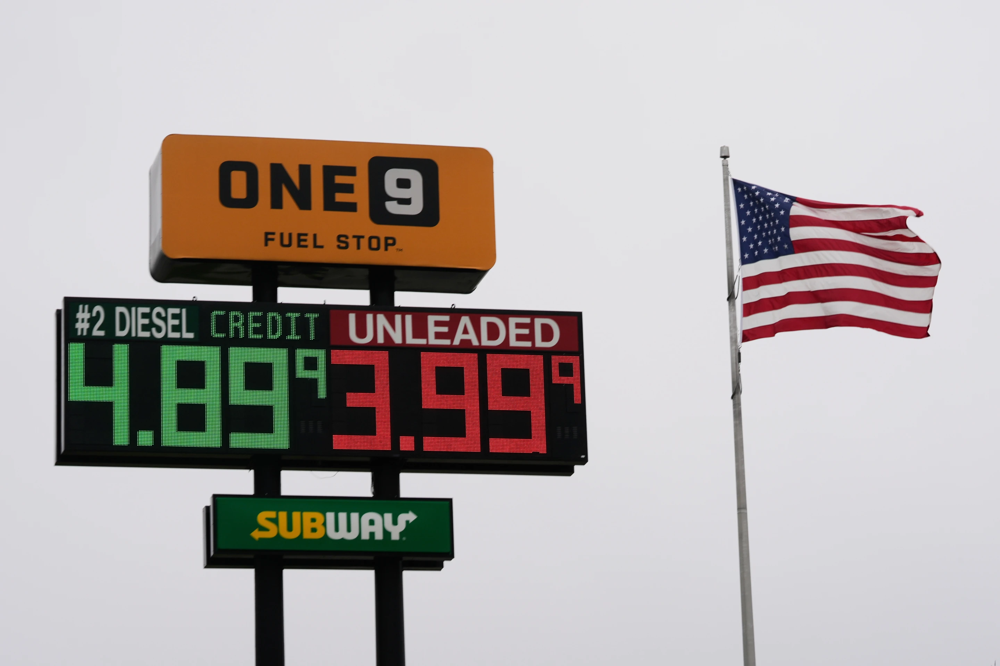

Monday, June 29, 2026
The American Flag flies next to a One9 Fuel Stop sign displaying gas prices for diesel and unleaded gas in Wilmington, Ohio, Wednesday, June 10, 2026.


NEW YORK — An agreement to halt the Iran war and open the Strait of Hormuz was announced Sunday, but high oil and gasoline prices and energy supply difficulties will not be remedied overnight.
Energy experts say it will probably take months before energy firms can get back to a level that can satisfy the world’s demand. The effect will not be immediate, they warned, because of delayed shipping and processing of crude oil and security worries about crossing through the strait.
Crude oil tankers have been stuck in the Persian Gulf for over three months, unable to safely pass through the strait that normally carries nearly a fifth of the world’s oil and gasoline supply before the war began.
“It’s going to take time for people to get comfortable and for insurance to be in place … particularly to get people on the ground to restart some of these assets,” said Daniel Evans, global head of fuels and refining research at S&P Global Energy.
Oil prices fell early Monday after the arrangement was revealed.
Brent crude, the worldwide standard, dropped $3.45 to $83.89 a barrel. U.S. benchmark crude oil shed $4.03 to $80.85 a barrel.
Those prices remain significantly above the roughly $70 a barrel oil was trading at before the war started.
“Once the higher prices unwind, ships that are stuck will have to get out of the strait and then new tankers will have to come in to get loaded,” Evans added.
“You need to be confident that you have a big enough window of safety to get a ship in and load it and move it out,” he continued.
Oil tankers slow down too, he said. It takes months for the crude oil to travel from the strait to faraway countries, be delivered to a refinery for processing, and then arrive at its final destination.
Some Middle Eastern producers also halted the flow of oil from the ground, known as a shut-in, since they ran out of storage capacity. “Getting those operations back on line is a slow process. Countries such as Saudi Arabia and United Arab Emirates, where alternate pipelines or routes exist, in addition to the Strait of Hormuz, to deliver oil, may be among the quickest to resume production, said Alan Gelder, senior vice president of refining, chemicals and oil markets at analytics firm Wood Mackenzie.
“But places like Iraq could be much more challenged because they have had a much bigger shut-in, their fields are more difficult... it may well take about a year before they get back,” he said.
Investment in the energy system, which might take years to see the results, halted following the strait’s closure, Gelder added. So this capital will take some time to get back on track.
“We don’t know yet what open means or what the speed of evacuation of trapped material is going to be,” he said.